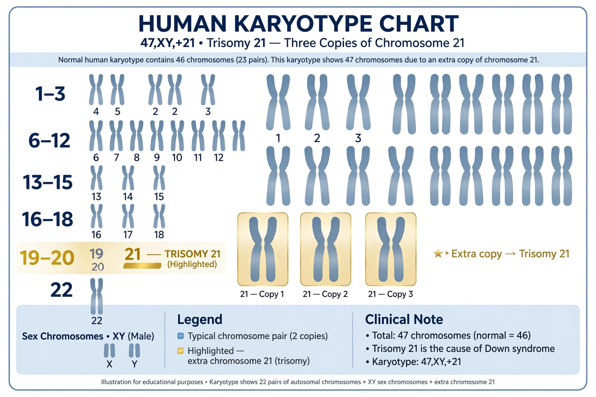

Down syndrome

| Other names | Trisomy 21 |
|---|---|
| Cause | Third copy of chromosome 21 |
| Frequency | About 1 in 1,000 births |
| Named after | John Langdon Down |
Down syndrome (also Down's syndrome) is a genetic disorder caused by the presence of all or part of a third copy of chromosome 21. It is usually associated with developmental delays, mild to moderate intellectual disability, and characteristic physical features. It is the most common chromosomal cause of intellectual disability.
Signs and symptoms
Common physical features include a flattened face and occiput, upward-slanting palpebral fissures, epicanthal folds, a single transverse palmar crease, small ears, short stature and poor muscle tone (hypotonia) in infancy. People with Down syndrome have increased risk of congenital heart defects (present in about 40–50%), gastrointestinal abnormalities, thyroid disorders, hearing and vision problems, leukaemia, and early-onset Alzheimer's disease, because the amyloid precursor protein gene lies on chromosome 21.
Cause and diagnosis
About 95% of cases result from trisomy 21 caused by nondisjunction during meiosis; the remainder are due to Robertsonian translocations or mosaicism. The risk rises with maternal age. The condition can be detected prenatally by screening tests (such as combined first-trimester screening or non-invasive prenatal testing) and confirmed by chorionic villus sampling or amniocentesis; after birth it is diagnosed by karyotype. The English physician John Langdon Down described the condition in 1866; its chromosomal basis was identified by Jérôme Lejeune in 1959.
Management and prognosis
There is no cure, but early intervention, special education, speech and occupational therapy, and treatment of associated conditions greatly improve quality of life. Life expectancy has risen from about 25 years in the 1980s to around 60 years in developed countries.